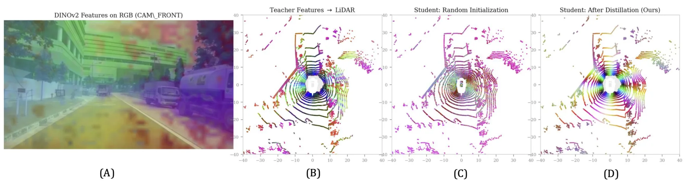
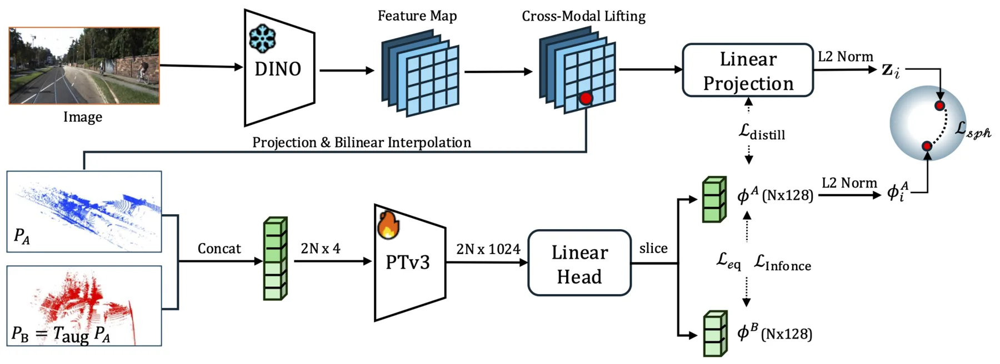
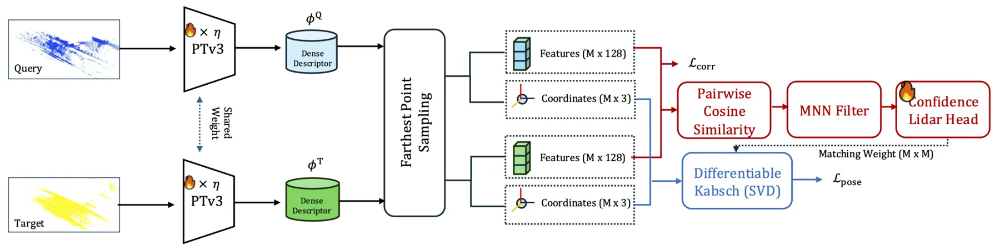
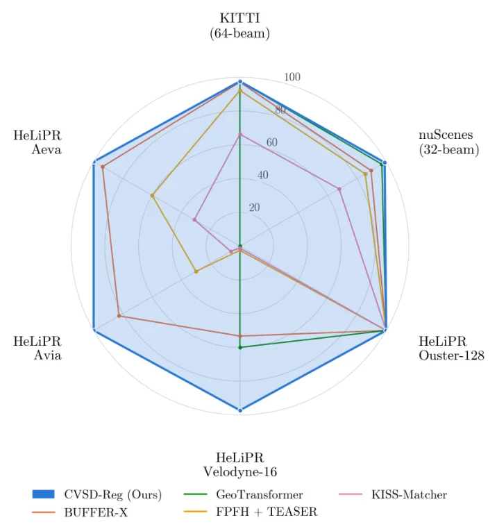
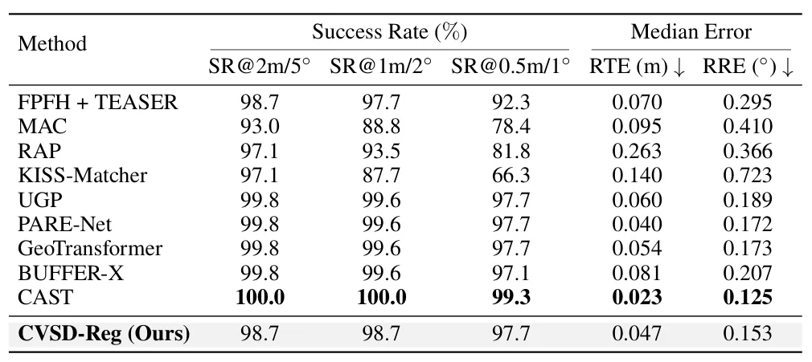
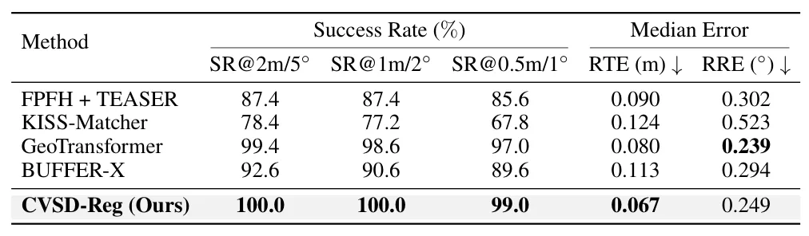
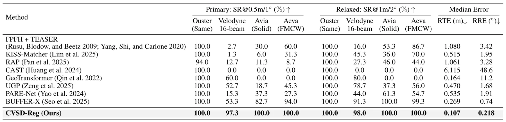
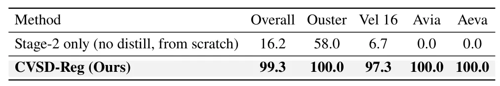
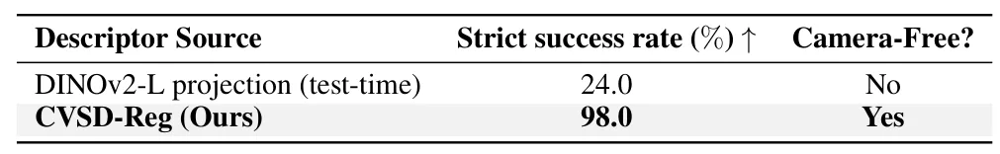
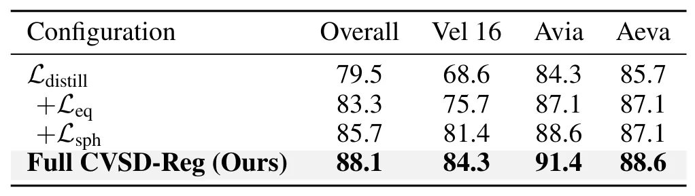

CVSD-Reg：面向鲁棒 LiDAR 配准的跨模态视觉语义先验蒸馏CVSD-Reg: Cross-Modal Visual Semantic Prior Distillation for Robust LiDAR Registration
与点云配准和 LiDAR SLAM 前端直接相关，且明确测试稀疏扫描和跨传感器泛化；需继续核实训练数据泄漏、运行时成本及在真实动态环境中的稳定性。
一句话工作总结
把 DINOv2 语义先验蒸馏到 LiDAR 描述子，提升跨密度、跨传感器全局点云配准鲁棒性。
摘要
CVSD-Reg 将视觉基础模型的语义先验蒸馏到 LiDAR 表示中。第一阶段使用冻结的 DINOv2 教师和 Point Transformer V3 学生，通过对比蒸馏、球面流形对齐、自监督 InfoNCE 一致性和软 SE(3) 不变性学习视角鲁棒描述子；第二阶段加入对应关系学习、密度感知点丢弃增强和端到端位姿优化。作者报告单一 checkpoint 可泛化到 KITTI、nuScenes 和 HeLiPR，并覆盖单传感器与零样本跨传感器场景，推理时无需相机或后处理 ICP。
Learning-based global point cloud registration has achieved remarkable progress, yet its reliance on geometric representations makes existing methods sensitive to variations in point density, scan pattern, viewpoint, and sensor characteristics. We propose CVSD-Reg, a robust global LiDAR registration framework that distills visual semantic priors from a vision foundation model into LiDAR representations. In Stage 1, a Point Transformer V3 student learns from a frozen DINOv2 teacher through contrastive distillation and spherical-manifold alignment, which preserves the hyperspherical geometry of the teacher embedding space. Self-supervised InfoNCE consistency and soft $\mathrm{SE}(3)$ invariance further encourage viewpoint-robust descriptors. In Stage 2, the distilled representation is adapted to registration through correspondence learning, density-aware point-dropout augmentation, and end-to-end pose optimization. With a single checkpoint, CVSD-Reg generalizes to both single-sensor and zero-shot cross-sensor scenarios without sensor-specific adaptation and remains entirely camera-free at inference. On KITTI, nuScenes, and HeLiPR, CVSD-Reg achieves strict success rate (SR@0.5\,m/$1^\circ$) of 97.7$\%$, 99.0$\%$, and 99.3$\%$, respectively, including 97.3$\%$ on sparse 16-beam Velodyne scans. It outperforms state-of-the-art geometric registration methods by up to 44.0 percentage points without requiring camera inputs or post-hoc ICP refinement.
中文解读摘录
- 论文：arXiv:2608.19536 · PDF
- 作者：Eunsoo Im, Junghun Suh, Gyeonggwan Lee, Seunghwan Hong
- 核心方法：将冻结 DINOv2 的视觉语义蒸馏到 Point Transformer V3 LiDAR 表示，结合球面流形对齐、InfoNCE、一致性与软 SE(3) 不变性，再进行对应关系学习、点丢弃增强和端到端位姿优化。
- 判断：对 LiDAR SLAM 的全局重定位和跨传感器配准很有价值。摘要声称在 KITTI、nuScenes、HeLiPR 以及稀疏 16-beam 扫描上取得高成功率，但需要继续核验训练/测试隔离、动态场景表现、单次推理成本，以及是否真的无需 ICP 仍保持稳定。
- 评分：9.0/10。
图表/页面预览
{kind=link}

{kind=link}

{kind=link}

{kind=link}

{kind=link}

{kind=link}

{kind=link}

{kind=link}

{kind=link}

{kind=link}
